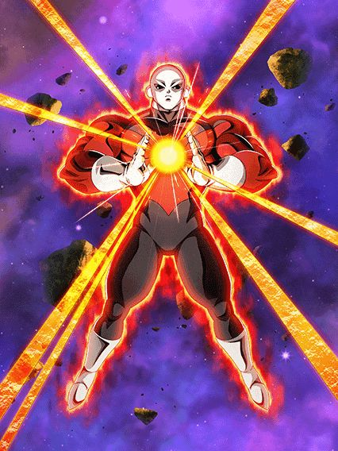
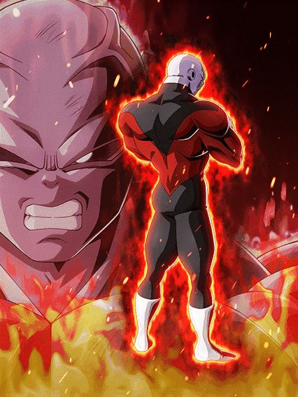

SÓ LEVOU 6 MESES 😭😭😭 BEM VINDO JIREN
O Jiren é extremamente simples, tendo só um monte de ATK e DEF e 50% de redução de dano q aumenta pra 61% se ele estiver nos slots 2 ou 3
No turno seguinte você já pode ir pra standby dele, e é bom que você vá mesmo

O Jiren tem 50% de redução de dano e cada orb pega aumenta a redução em 11%, chegando facilmente à 100% com só 5 orbs, o que deixa ele invencível contra tudo
Além disso, ele ainda dá 70% de ATK pra todos aliados por 2 turnos, o tornando um tank suporte perfeito
Apesar de ele não poder atacar, isso é bem compensado quando a standby acaba..
")
Será que 511% de ATK e DEF e essencialmente crítico garantido tá bão?
O Jiren não só tem 60% de redução de dano pro resto da luta, como também stacka 50% de ATK RECEBENDO SUPER ATTACKS DO INIMIGO
O cara simplesmente quer levar supers de propósito, muito bom
E com a chegada dele, acaba-se enfim a Sync do Global e JP (que foi horrível 💀)